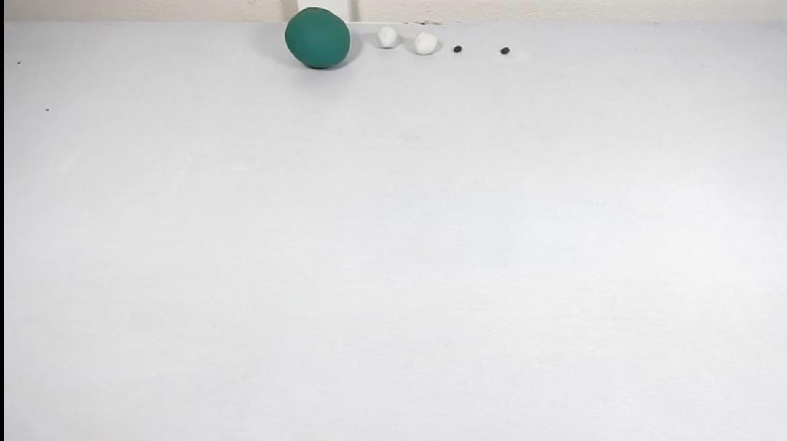
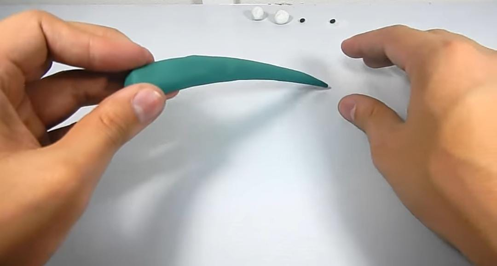
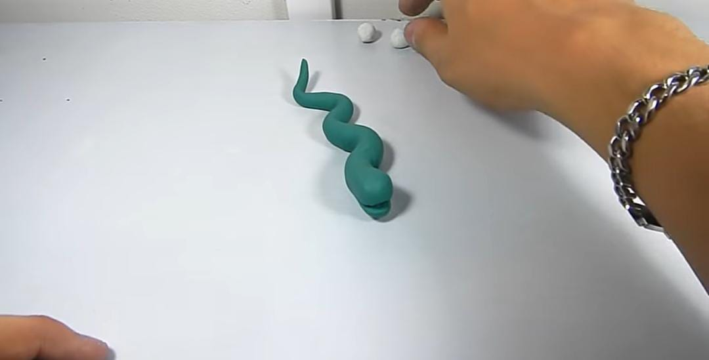
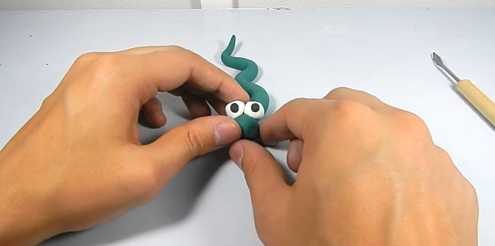

Vamos a empezar
Paso 1 Hacer una bola verde grande, dos bolas medianas color blanco y dos bolitas color negro.

Paso 2 Empezaremos a amasar la bola verde, que tome forma de cilindrino,pero que una de las partes esta
mas grande que la otra final una punta.La punta gruesa la empezamos a amasar para quede un poco plana

Paso 3 Con un objeto haremos la boca de la serpiente en la parte gruesa , le cortaremos un poco
y retiramos el desperdicio.Tomaremos el cuerpo de las serpientes y empezamos a hacer un zig-zag
con el y la punta se sube un poco

Paso 4 Tomaremos las dos bolitas blancapara poder hacer los, la colocaremos arriba de la cabeza
para hacer la pupila de los ojos colocaremos las pupilas
